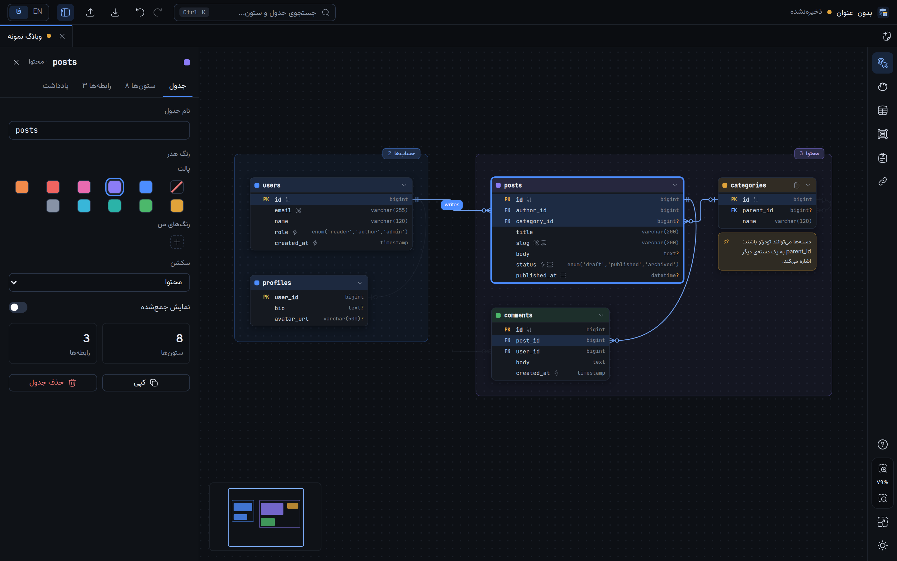

نمودار پایگاهداده، در یک فایل
ویرایشگر محلی نمودار ER. کل پروژهی شما یک فایل .erd.json است که میشود کامیت کرد، diff گرفت و به یک ایجنت هوش مصنوعی داد. بدون حساب کاربری و بدون ابر.
لینوکس · ویندوز · مک · رایگان و متنباز

چرا یک ابزار ERD دیگر؟
بیشتر ابزارهای نمودار، طرح پایگاهدادهی شما را در ابر خودشان یا در قالبی نگه میدارند که فقط خودشان میخوانند. این ابزار آن را در فایلی نگه میدارد که مال خودتان است.
یک فایل، یک منبع حقیقت
فایل .erd.json خودِ پروژه است. SQL، DBML، تصویر و Markdown از روی آن ساخته میشوند و هرگز دستی ویرایش نمیشوند. کلیدها با ترتیب ثابت نوشته میشوند و مقدارهای پیشفرض نمیآیند، پس diffهای Git کوچک میمانند.
محلی و خصوصی
هیچ چیز آپلود نمیشود. فایل را با Open with از مدیر فایل باز کنید، روی پنجره بکشید یا از دیالوگ انتخاب کنید. ذخیره اتمی است: خرابی هرگز نیمی از فایل را نمیگذارد.
برای ایجنتهای هوش مصنوعی هم
یک فرمت مستند، JSON Schema و یک اسکیل آماده به ایجنت اجازه میدهد نمودار شما را مثل JSON ساده بخواند و بنویسد. یک خروجی هم هست که اصلاً یک بریف برای ایجنت است.
خط به ستون وصل میشود
رابطهها ستون را به ستون وصل میکنند، نه جعبه را به جعبه، با نماد Crow's Foot. هر دو کاردینالیتی، ON DELETE و ON UPDATE روی خط تنظیم میشوند.
سکشنی که همراهش را میبرد
جدولها را بر اساس حوزه در یک قاب جمع کنید. با جابهجایی سکشن همهی داخلش میروند و با کشیدن یک جدول به بیرون از گروه خارج میشود. عضویت از روی چیدمان به دست میآید و ذخیره نمیشود.
فارسی و انگلیسی
کل رابطهی کاربری هم فارسی دارد هم انگلیسی، با چیدمان راستبهچپ. دادهی جدولها همیشه عدد لاتین دارد.
قابلیتها
هر چه اینجا آمده، همین حالا در برنامه هست.
جدول، ستون، نوع
با دابلکلیک روی بوم جدول اضافه کنید. Tab به ستون بعدی میرود. انتخابگر نوع، طول، دقت، مقیاس و مقدارهای enum را پر میکند و نوعهایی را که پایگاهدادهی شما ندارد پنهان میکند.
ایندکس و کلید
چند ستون را انتخاب کنید و Ctrl+I بزنید تا ایندکس ترکیبی با ترتیب دلخواه بسازید. PK، unique، not null، auto-increment و مقدار پیشفرض برای هر ستون جدا تنظیم میشود.
Inspector و یادداشت
پنل کناری هر چه را انتخاب کردهاید ویرایش میکند. جدول، ستون و سکشن یادداشت دارند و یادداشت چسبان را میشود هر جا گذاشت. یادداشتها به خروجیها هم میروند.
جستجو، تب، Undo
Ctrl+K جدول، ستون و یادداشت را پیدا میکند. چند بورد در تبها باز میشوند. Undo و Redo ۵۰۰ مرحله نگه میدارند، با جابهجایی و تغییر اندازه.
خروجی SQL و DBML
CREATE TABLE، ایندکس و کلید خارجی برای MySQL، PostgreSQL، SQLite، SQL Server یا ANSI ساده، و DBML برای dbdiagram.io. هر چه پایگاهداده نتواند بیان کند گزارش میشود و بیصدا حذف نمیشود.
تصویر و خروجی از انتخاب
PNG یا SVG از کل بورد یا فقط از آنچه انتخاب کردهاید، تیره یا روشن.
وارد کردن SQL
یک dump طرح (CREATE TABLE، ایندکس، کلید خارجی، کامنت، enum) را باز کنید یا بچسبانید تا یک بورد جدید شود.
بریف ایجنت
خروجی Markdown با راهنمای کوتاه خواندن، همهی جدولها با یادداشتهایشان، رابطهها و نکتههای باز.
در یک دقیقه شروع کنید
بدون ثبتنام و بدون تنظیمات.
- نصب کنیدنصبکنندهی سیستم خود را از پایین بگیرید، یا در لینوکس AppImage را اجرا کنید.
- نمونه را ببینیدCtrl+N بزنید و بورد نمونه را انتخاب کنید: یک پایگاهدادهی وبلاگ کوچک با سکشن، کلید، رابطه و یادداشت.
- مال خودتان را بکشیدروی بوم دابلکلیک کنید تا جدول بسازید. از نقطهی یک ستون به جدول دیگر بکشید تا رابطه بسازید. با ? راهنما باز میشود.
- ذخیره و خروجیCtrl+S فایل
.erd.jsonرا مینویسد. Ctrl+E خروجی SQL، DBML، تصویر یا Markdown میدهد.
میانبرها
میانبرها روی کیبورد فارسی هم کار میکنند، چون کلید فیزیکی را میخوانند.
برای آدمها و ایجنتهای هوش مصنوعی
چون پروژه JSON ساده با یک schema است، ایجنت میتواند طرح پایگاهدادهی شما را بخواند، تغییر دهد و پس بدهد، و شما نتیجه را در ویرایشگر باز میکنید.
۱. فرمت فایل
همهی فیلدها در docs/FORMAT.md توضیح داده شدهاند، همراه با JSON Schema قابلخواندن برای ماشین. شناسهها ثابتاند، پس تغییر نام هیچ ارجاعی را خراب نمیکند.
۲. اسکیل ایجنت
یک فایل Markdown که به هر ایجنت کدنویسی فرمت، قواعد ویرایش امن و راه بررسی کارش را یاد میدهد. اسکیل را بخوانید، یا این لینک را به ایجنت خود بدهید:
https://raw.githubusercontent.com/mnr73/erd-editor/main/skills/erd-editor/SKILL.md
۳. توسعهی خود برنامه
مشارکتکنندههایی که از ایجنت استفاده میکنند فایل AGENTS.md را دارند: قراردادها و تلههایی که از روی کد معلوم نیست.
{
"format": "erd-editor",
"version": 1,
"meta": { "name": "shop", "dbType": "postgres" },
"tables": [
{
"id": "t_orders", "name": "orders",
"columns": [
{ "id": "c_orders_id", "name": "id",
"type": "bigint", "pk": true },
{ "id": "c_orders_user", "name": "user_id",
"type": "bigint", "notNull": true }
]
}
],
"refs": [
{
"id": "r_orders_user", "label": "places",
"from": { "table": "t_orders",
"columns": ["c_orders_user"],
"cardinality": "0..*" },
"to": { "table": "t_users",
"columns": ["c_users_id"],
"cardinality": "1" },
"onDelete": "cascade"
}
]
}
خلاصهشده است. فایل کامل: example.erd.json.
استفاده از اسکیل در ۳۰ ثانیه
اسکیل یک فایل Markdown ساده است، پس با هر ایجنتی کار میکند: Claude Code، Codex، Cursor، Copilot، Gemini و غیره. یا آن را جایی بگذارید که ایجنت شما اسکیل یا دستورالعمل را میخواند (مثلاً skills/erd-editor/SKILL.md یا AGENTS.md)، یا همین متن را در چت بچسبانید:
Read https://raw.githubusercontent.com/mnr73/erd-editor/main/skills/erd-editor/SKILL.md and follow it. Then, in db/shop.erd.json, add an "invoices" table linked to "orders" with ON DELETE CASCADE, and validate the file.
اسکیل ساختار فایل، قواعدی که نمودار را معتبر نگه میدارند (شناسهها، جهت رابطه، کاردینالیتی)، دستورالعمل تغییرهای رایج و راه بررسی کار را به ایجنت میدهد. بررسی با یک اسکریپت مستقل انجام میشود که فقط Node میخواهد. فایل ویرایششده مثل همیشه در ویرایشگر باز میشود.
مقایسه با ابزارهای مشابه
ابزارهای مختلف به کارهای مختلف میخورند. جای این ابزار اینجاست.
| ERD Editor | dbdiagram.io | drawDB | MySQL Workbench | draw.io | |
|---|---|---|---|---|---|
| بدون اینترنت و بدون حساب کاربری | بله | سرویس آنلاین | داخل مرورگر | بله | بله (نسخهی دسکتاپ) |
| کل پروژه یک فایل متنی ساده که مال شماست | JSON همراه با schema | در خود سرویس ذخیره میشود | در مرورگر ذخیره میشود | قالب پروژهی خودش | فایل نمودار (XML) |
| ستون، کلید و رابطه را میشناسد (فقط شکل نیست) | بله | بله | بله | بله | نه، شکلهای عمومی |
| JSON Schema مستند و اسکیل ایجنت | بله | نه | نه | نه | نه |
| اتصال به پایگاهدادهی زنده و مهندسی معکوس | نه (dump SQL را وارد میکند) | نه | نه | بله | نه |
ستونهای ابزارهای دیگر برداشت ماست و ممکن است قدیمی شده باشد، پس پیش از تصمیم سایت خودشان را ببینید. اگر خانهای غلط است یک issue بازکنید تا درست کنیم. ERD Editor به پایگاهدادهی در حال اجرا وصل نمیشود: با dump SQL کار میکند.
دانلود
آخرین نسخه، ساختهشده با GitHub Actions برای هر سیستم.
نسخهها هنوز امضای دیجیتال ندارند. ویندوز ممکن است SmartScreen با «ناشر ناشناس» هشدار بدهد: More info و بعد Run anyway را بزنید. در مک بار اول روی برنامه راستکلیک و Open را انتخاب کنید.
یا خودتان بسازید: git clone https://github.com/mnr73/erd-editor && cd erd-editor && npm install && npm run tauri build